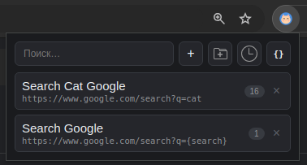
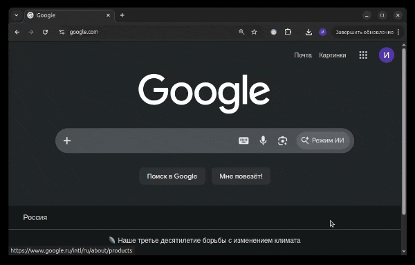

URL Postfix Manager
Сохраняйте query-параметры и URL-шаблоны, применяйте к вкладкам, выделенному тексту или ссылкам — всё через popup и контекстное меню.
Зачем
При разработке и тестировании часто приходится открывать одну и ту же страницу с разными параметрами: feature flags, debug-режимы, языки, UTM-метки, A/B-варианты. Вместо ручного редактирования адресной строки вы можете сохранить наборы параметров один раз и применять их из popup или контекстного меню.


Использование
➕ Добавить постфикс
- Откройте popup расширения (клик по иконке ).
- Нажмите ＋.
- Введите название и постфикс, например:
Название: dark mode
Постфикс: theme=dark&lang=ru- При необходимости выберите папку.
- Нажмите Сохранить или Enter.
▶️ Применить постфикс
Клик по постфиксу в popup применяет его к URL текущей активной вкладки.
URL: https://example.com/page?lang=en&id=42
Постфикс: lang=ru&debug=true
Итог: https://example.com/page?lang=ru&id=42&debug=true
lang будет перезаписан, а debug добавлен.
Форматы query-постфикса
Все эти варианты эквивалентны:
theme=dark&lang=ru
?theme=dark&lang=ru
&theme=dark&lang=ruURL-шаблоны
Если постфикс начинается с http:// или https://,
расширение считает его URL-шаблоном и открывает результат в новой вкладке.
https://example.com/search?q={query}
При применении к выделенному тексту или ссылке {query} будет
заменен на переданное значение. Если применить такой шаблон из popup
без выделенного текста или ссылки, расширение запросит значение вручную.
Папки
- Кнопка 📁 в topbar создаёт новую папку.
- Клик по шапке папки сворачивает или разворачивает её.
- ✕ справа от названия удаляет папку, а постфиксы внутри переезжают в корень.
- Drag & drop постфикса на папку перемещает его в эту папку.
- Drag & drop на корневую область перемещает постфикс из папки в корень.
История
Кнопка ⏱️ в topbar показывает применённые постфиксы. Элементы истории можно открыть повторно или удалить.
Поиск
Поле поиска фильтрует постфиксы по названию и содержимому. Если папка совпадает с поиском, показываются её элементы.
JSON State
Кнопка { } в topbar открывает редактор состояния. В нём можно:
- посмотреть текущее состояние в JSON;
- вручную изменить JSON и нажать Применить;
- импортировать состояние из
.jsonфайла; - экспортировать текущее состояние в файл.
После применения или импорта popup и context menu обновляются сразу.
Валидация при импорте
postfixes,foldersиhistoryдолжны быть массивами;- у папок и постфиксов должны быть уникальные
id; - нельзя использовать зарезервированный
idapplyPostfixAction; folderIdдолжен ссылаться на существующую папку или бытьnull;- у папки должно быть строковое
name; - у постфикса должны быть строковые
labelиpostfix.
Контекстное меню
Расширение добавляет пункт URL Postfix Manager в контекстное меню Chrome для выделенного текста и ссылок.
- Если применить постфикс к ссылке, значение ссылки передаётся в шаблон.
- Если применить постфикс к выделенному тексту, выделенный текст передаётся в шаблон.
- Обычные query-постфиксы также доступны из контекстного меню.
Хранение данных
Все данные хранятся локально в chrome.storage.local
под ключом data_v2.
{
"postfixes": [
{
"id": "uuid",
"label": "dark mode",
"postfix": "theme=dark",
"count": 42,
"createdAt": 1700000000000,
"folderId": null,
"order": 1700000000000
}
],
"folders": [
{
"id": "uuid",
"name": "Работа",
"collapsed": false,
"order": 1700000000000
}
],
"history": [
{
"id": "uuid",
"postfix": {
"id": "uuid",
"label": "dark mode",
"postfix": "theme=dark"
},
"postfixParams": [],
"newUrl": "https://example.com/?theme=dark",
"url": "https://example.com/",
"tabId": 123,
"createdAt": 1700000000000
}
]
}Структура проекта
url-postfix-extension/
├── manifest.json # Manifest V3
├── background.js # service worker и context menu
├── popup.html # разметка popup
├── popup.css # стили popup
├── popup.js # UI, drag & drop, импорт/экспорт JSON
├── state/
│ └── AppState.js # состояние и chrome.storage.local
├── services/
│ ├── postfix.js # применение постфиксов и URL-шаблонов
│ └── history.js # история
├── icons/ # иконки расширения
└── svg/ # иконки UIНикаких build-шагов, фреймворков и зависимостей. Vanilla JS + Chrome Extension APIs.
Разрешения
В manifest.json используются разрешения:
| Разрешение | Назначение |
|---|---|
storage | локальное хранение состояния |
activeTab | работа с текущей активной вкладкой |
tabs | обновление текущей вкладки и открытие новых |
contextMenus | пункты контекстного меню |
scripting | зарезервировано для будущих возможностей |
Расширение хранит данные локально и не отправляет их на внешние серверы.
Разработка
Проект не требует установки зависимостей. После изменения файлов
перезагрузите unpacked extension в chrome://extensions/.
Быстрая синтаксическая проверка:
node --check popup.js
node --check background.js
node --check state/AppState.js
node --check services/postfix.js
node --check services/history.js